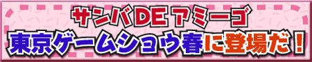

| 緊急発表！ |


アーケードでただ今人気沸騰中の「サンバDEアミーゴ」 が
4月27日（予定）ついにドリームキャストに登場だ！
今まで、家庭用には移植が難しいとされていたマラカスコントローラも、
セガの最新技術でなんとアーケードと同じように楽しめるようになったんだ！
さぁ、家庭でもサンバをバカ楽しもうぜ！アミーゴ！
< 超おバカちゃんノリノリマラカスゲー／4月27日発売予定 >

３月３０日更新 最新情報 !
2月２５日更新情報
くわしい情報は各ゲーム専門誌、またはこのホームページにて随時公開していくよ！
| ｜ Presented By SONIC TEAM 2000 ｜ |